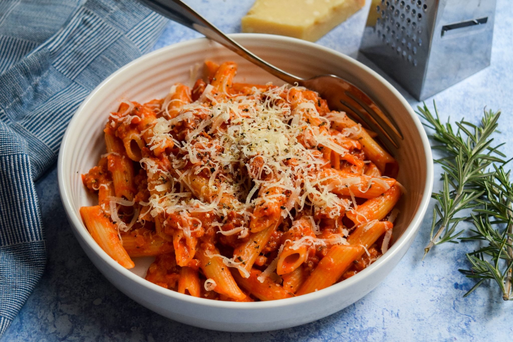

Sausage ragu
By Esther Clark
- Time: 45 mins
- Serves: 4 persons
- Ratings: 5/5

Ingredients
- 3 tbsp olive oil
- 1 onion, finely chopped
- 2 large garlic cloves, crushed
- ¼ tsp chilli flakes
- 2 rosemary sprigs, leaves finely chopped
- 2 x 400g cans chopped tomatoes
- 1 tbsp brown sugar
- 6 pork sausages
- 150ml whole milk
- 1 lemon, zested
- 350g rigatoni pasta
- rgrated parmesan and ½ small bunch parsley, leaves roughly chopped, to serve
Methodes
- Heat 2 tbsp of the oil in a saucepan over a medium heat. Fry the onion with a pinch of salt for 7 mins. Add the garlic, chilli and rosemary, and cook for 1 min more. Tip in the tomatoes and sugar, and simmer for 20 mins.
- Heat the remaining oil in a medium frying pan over a medium heat. Squeeze the sausagemeat from the skins and fry, breaking it up with a wooden spoon, for 5-7 mins until golden. Add to the sauce with the milk and lemon zest, then simmer for a further 5 mins. To freeze, leave to cool completely and transfer to large freezerproof bags.
- Cook the pasta following pack instructions. Drain and toss with the sauce. Scatter over the parmesan and parsley leaves to serve.